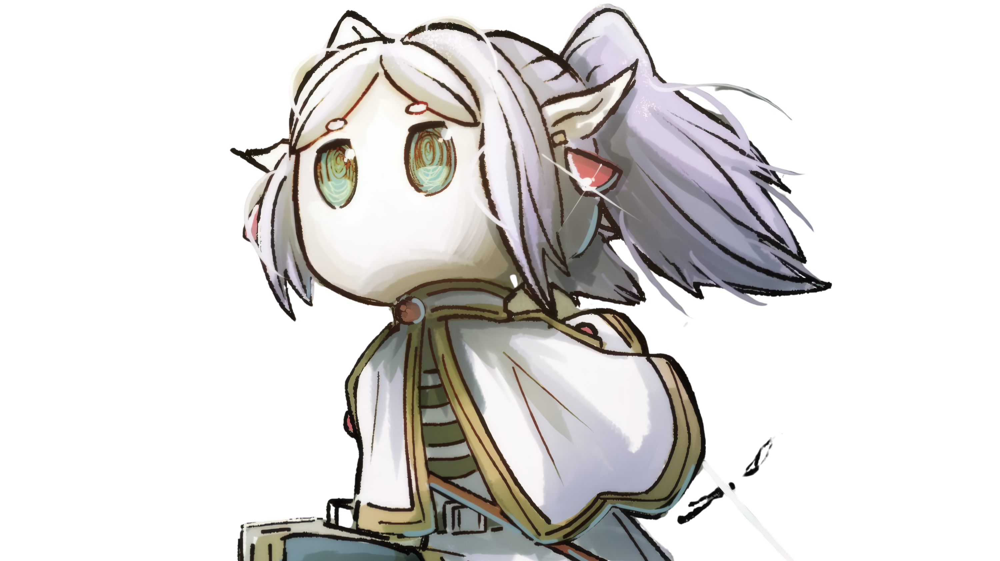

Bringing the magic of Frieren: Beyond Journey's End to your collection.

Welcome to Frieren Collection, an online store dedicated to fans of Frieren: Beyond Journey's End. We offer collectible figurines inspired by the characters and magical world of the series.
Our goal is to help fans find figures that they can proudly display, add to their collections, or give as gifts to fellow anime enthusiasts.
Whether you are starting your first collection or adding another favorite character to your display, we hope to make your collecting journey enjoyable.
Our mission is to provide fans with high-quality, affordable, and carefully selected figurines. We aim to offer a convenient shopping experience where collectors can discover products inspired by the characters they love.